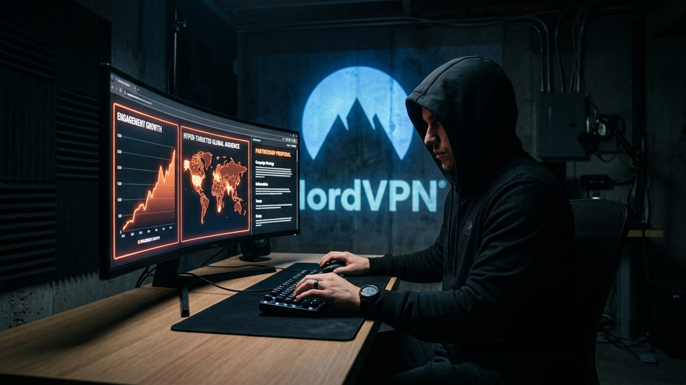

Alright, let's cut the crap. You want to land a sponsorship with a tech giant like NordVPN. You see them everywhere, and you want a piece of that marketing budget. I've spent 15 years on the inside of IT and cybersecurity, dealing with vendors, managing budgets, and seeing what makes a company open its wallet. It's not luck, and it's not about having a million subscribers. It's about strategy, professionalism, and proving you're a good investment, not a liability.
Most creators think begging in DMs or sending a generic "I love your product, please sponsor me" email works. It doesn't. It gets your email address flagged as spam. This guide is your new playbook. I'm going to give you the no-fluff, brutally honest breakdown of how to go from being just another small channel to a creator NordVPN's marketing team is excited to partner with. Buckle up.
Listen to me carefully: NordVPN's marketing department does not care about your subscriber count if it's full of dead accounts and unengaged viewers. A million subs mean nothing if only 5,000 people watch your videos and nobody comments. That's a ghost town. What they care about is influence, and real influence lives in niche communities where trust is the primary currency. A small channel with 10,000 die-hard fans who hang on your every word is infinitely more valuable than a 500,000-subscriber channel with a passive, disengaged audience. Your job isn't to be a billboard; it's to be the trusted local expert everyone goes to for advice.
First, you need to niche down until it hurts. "Tech reviews" is not a niche; it's a black hole where small channels go to die. "Cybersecurity for freelance journalists" or "Privacy tools for cryptocurrency traders" or "Setting up a secure home network for remote workers"—those are niches. Why? Because you can become the number one authority in that specific space. When a viewer has a problem, they think of you first. This laser focus makes it incredibly easy for a brand manager at NordVPN to see exactly how you fit into their marketing plan. They aren't buying views; they're buying access to a specific, high-value demographic through a trusted gatekeeper—you.
Next, you must foster and measure real engagement. Stop obsessing over views. Start obsessing over comment quality, share counts, and the DMs you get asking for specific advice. When someone comments, "I followed your guide and my network feels so much more secure now, thank you!"—that's pure gold. Screenshot that. That's a testimonial to your influence. Create content that begs for interaction. Instead of just reviewing a feature, create a tutorial that challenges your audience to try it and report back. This builds a community, not just an audience. When you pitch NordVPN, you won't say, "My videos get 10k views." You'll say, "My last video on public Wi-Fi security generated over 200 comments, with dozens of people asking for a specific VPN recommendation." See the difference? One is a number; the other is a story of demand you can fill.
A sponsorship is a business transaction, period. NordVPN is a multi-million dollar company. They will not partner with someone who looks like a hobbyist operating out of their basement, even if you are. Your "brand" is the complete package of professionalism and perceived expertise you present to the world. If your channel has a sloppy banner, terrible audio, and your "business email" is `xX_GamerDude_Xx@hotmail.com`, you've already lost. You are asking them to associate their trusted, high-tech brand with yours. You have to meet them at their level of professionalism, or the conversation will never even start.
Your first and most critical project is to build a professional media kit. This is a non-negotiable, 2-4 page PDF document that is your business resume. It immediately signals that you are serious. It must contain several key sections. Start with a brief bio and a mission statement for your channel—what is your core promise to your audience? Next, and most importantly, your audience demographics. Don't guess. Go into your YouTube, podcast, or social media analytics and pull the real data: age ranges, gender split, top countries, and—if the platform provides it—key interests. You also need to include your key performance metrics: average monthly views or downloads, average engagement rate (comments + likes / views), and any click-through rates (CTR) from past affiliate links. Finally, lay out your sponsorship packages with starting rates. Yes, put your prices on it. It shows confidence and weeds out low-ballers. A simple package list might include a 60-second mid-roll ad, a dedicated review video, and a social media post bundle.
Before you even think about creating that kit, you need to do a brand audit of your own content. Go back and look at your last 20 videos or blog posts. Does the content align with the brand of a cybersecurity expert? Are you consistently talking about privacy, security, and digital freedom? Or is your content a random mix of unboxings, gaming streams, and one video about VPNs you made six months ago? A brand manager will absolutely scroll through your history to see if you are a legitimate authority or just a creator chasing a buck. Your content history is the evidence that backs up the claims in your pitch. If they don't align, your pitch is worthless.
💡 Expert IT Tip: Use a free tool like Canva to create your media kit. They have professional templates specifically for this. Don't overthink the design; focus on the data. Pull direct screenshots from your YouTube Studio or other analytics dashboards and embed them in the document. This provides undeniable proof of your claims and shows you are transparent and data-driven. A media kit with hard numbers is ten times more effective than a fancy design with vague promises.
The inbox of a partnership manager is a war zone. It's flooded with hundreds of low-effort, generic, "Hey, collab?" emails every single day. Your mission, should you choose to accept it, is to craft a pitch that is so well-researched, professional, and value-packed that it stands out like a flare in the night. 99% of creators fail right here. They send a lazy email to a generic address and wonder why they never hear back. You are going to be the 1% that does the work upfront.
First, find the right person. Do not use the `info@` or `press@` email addresses on their website. Those are black holes. Your target is a human being with a specific title. Go to LinkedIn. Use the search bar for "NordVPN" and then filter the people by titles like "Partnership Manager," "Influencer Marketing Manager," or "Affiliate Manager." This is your target list. This simple act of digital detective work puts you ahead of the vast majority of your competition. When you find a promising contact, you're looking for the person responsible for your region (e.g., North America, EMEA) if possible.
Next, craft the perfect subject line. It needs to be clear, professional, and communicate value instantly. A terrible subject line is "Sponsorship Inquiry" or "Collaboration." A powerful subject line is "Partnership Proposal: [Your Channel Name] & NordVPN | Accessing the [Your Niche] Audience." This tells them who you are, what you want, and what's in it for them, all before they even open the email. The body of your email should be concise and follow a proven formula. Start by showing you've done your homework. Mention a specific feature you admire, like their Meshnet tool, or a recent marketing campaign you enjoyed. This proves you're not just spamming a list. Then, introduce your channel and, more importantly, your audience. Don't say, "I have 15k subs." Say, "My channel, [Your Channel Name], provides weekly cybersecurity tips to an audience of 15,000 freelance web developers who are actively looking for solutions to secure client data." Connect their product directly to your audience's problem. Finally, have a clear call to action. Attach your media kit and ask for a brief 15-minute call to discuss how a partnership could work. Make it easy for them to say yes.
If you get a positive response, the next step is talking business. Walking into this conversation without understanding the different types of deals is like walking into a server room without a keycard—you're not going to get very far. You need to know the lingo and understand the value you bring to the table. This isn't about getting free stuff; it's about structuring a professional agreement that benefits both you and the brand.
The most common entry point is an Affiliate Program. This is the lowest risk for NordVPN, which is why it's often the first thing they'll offer a smaller creator. They give you a unique tracking link and a discount code. You promote it, and for every person who signs up through your link, you get a commission—a percentage of the sale. This is a purely performance-based deal. If you drive a hundred sign-ups, you get paid well. If you drive zero, you get zero. Starting as an affiliate is a fantastic way to prove your worth. If you can show them that your audience converts, you have powerful leverage to negotiate a bigger deal later.
Protect your identity and browse privately with Surfshark One - the all-in-one security suite.
GET 60% OFF SURFSHARK NOWThe next level up is a Flat-Fee Sponsorship. This is what most people think of when they hear "sponsorship." NordVPN pays you a fixed amount of money (e.g., $750) in exchange for a specific "deliverable," such as a 60-second integrated ad in one of your YouTube videos. This is great for you because the income is guaranteed, regardless of how many sales you drive. Brands reserve these deals for creators who have either a large, established audience or a smaller, highly-specialized audience with a proven track record of engagement. You must be able to justify your fee based on your channel's performance metrics.
The holy grail, especially for growing channels, is often the Hybrid Model. This is a combination of both: you get a smaller flat fee upfront to guarantee your time and effort are compensated, and you also get an affiliate commission on all sales you generate. This is an ideal structure because it shows the brand is invested in you as a partner, while also incentivizing you to create the most effective, high-converting content possible. It aligns everyone's goals. When you negotiate, don't be afraid to propose a hybrid deal. It shows you're confident in your ability to drive results and are thinking like a long-term partner.
💡 Expert IT Tip: To figure out your starting rate for a flat-fee sponsorship, use the industry-standard CPM (Cost Per Mille, or cost per thousand views) model. For a good tech channel, a sponsored CPM can range from $20 to $50. If your average video gets 15,000 views, your starting negotiation point would be (15 x $20) = $300 on the low end and (15 x $50) = $750 on the high end. Start your ask in the middle-to-high end of that range. This is real data, not a number you pulled out of thin air.
Securing the deal is only half the battle. The real work begins now. Your performance on this first campaign determines whether this is a one-time transaction or the beginning of a lucrative, long-term partnership. The goal is to be so professional, so effective, and so easy to work with that when the next quarter's budget is being planned, your name is at the top of their list. This is where you separate yourself from the 99% of creators who do the bare minimum.
First, meticulously analyze the creative brief. The brief is the set of instructions from the brand. It will contain key talking points, mandatory calls to action, and a list of "dos and don'ts" (e.g., "Do mention our no-logs policy," "Don't make unrealistic claims about speed"). Read it, then read it again. If any part of it is ambiguous, ask for clarification immediately, *before* you start filming. This simple step prevents misunderstandings and the nightmare scenario of having to re-shoot your content. Nothing sours a relationship faster than delivering content that completely misses the mark because you didn't read the instructions.
When creating the content, focus on authentic integration. Your audience can smell a forced, robotic ad read from a mile away. Don't just list features. Tell a story. Explain a real-world problem your audience faces and demonstrate how NordVPN is the solution. For example, "I was working from a coffee shop last week and was worried about the public Wi-Fi, so I fired up NordVPN, connected to a server in seconds, and knew my client data was encrypted and safe." This is relatable, authentic, and far more persuasive than reading a marketing script verbatim. Your audience trusts you, and your single biggest asset is that trust. Don't compromise it for a paycheck.
The final step, and the one most creators skip, is providing a post-campaign report. About one to two weeks after your sponsored content goes live, compile a simple one-page PDF and email it to your contact. Include screenshots of the performance analytics: view count, audience retention, likes, and click-through rate on your affiliate link. Cherry-pick a few of the best, most positive comments from your audience about NordVPN. Conclude the report by thanking them for the partnership and stating your enthusiasm for working together again. This single act of professionalism demonstrates that you are a data-driven partner who is invested in their success, making it an incredibly easy decision for them to re-invest in you.
As an IT system administrator, my career is built on risk mitigation and reading the fine print. A bad contract can be far more damaging than no contract at all. When you get to the stage where a formal agreement is on the table, you need to switch from "creator" mode to "business owner" mode. Your excitement to land the deal cannot blind you to potentially harmful clauses that could restrict your future growth or damage your reputation.
The first major red flag to watch for is an aggressive Exclusivity Clause. It's reasonable for NordVPN to ask that you don't promote a competing VPN service in the *same* piece of content. It is unreasonable for them to demand that you cannot work with any other cybersecurity, privacy, or tech-related company for the next 12 months. This is a massive overreach. If they want that level of exclusivity, the payment they offer should be substantial enough to compensate you for all the other opportunities you'll have to turn down. Do not agree to a broad, long-term exclusivity clause without a massive paycheck attached.
Next, scrutinize the section on Content Ownership and Usage Rights. The standard and fair agreement is that you, the creator, retain full ownership of the content you produce. You are granting the brand a "license" to use that content under specific terms. The contract should clearly define where they can use it (e.g., their social media channels) and for how long (e.g., for one year from the publish date). Be very wary of any language that says they have rights "in perpetuity" (forever) or can use it in "any and all media." This would mean they could take your video and run it as a national TV ad five years from now without paying you another dime.
Finally, there are two non-negotiables: payment terms and legal disclosure. The contract must clearly state the payment amount and the payment schedule. "Net 30" is standard, meaning they will pay you within 30 days of your content going live. "Net 60" or "Net 90" is less ideal but common. Anything longer is unacceptable. Also, you are legally required by the FTC (in the US) and other regulatory bodies to clearly and conspicuously disclose that your content is sponsored. This means using "#ad" or "#sponsored" in descriptions and stating it verbally in the video. Any brand that asks you to hide the fact that it's a paid promotion is not only unethical but is asking you to break the law and destroy the trust you've built with your audience. Walk away immediately.
Getting a sponsorship from a brand like NordVPN isn't a lottery. It's a process. It requires you to stop thinking like a hobbyist and start acting like a strategic business partner. It means building a real, engaged community in a specific niche, not just chasing meaningless subscriber numbers. It means presenting yourself professionally with a data-packed media kit and crafting a pitch that shows you've done your homework.
It means understanding the difference between an affiliate deal and a flat-fee sponsorship, delivering more value than they expect, and protecting yourself by reading the fine print of any contract. The path is clear: start with their affiliate program. It's the lowest barrier to entry and the single best way to generate real performance data. Use that data to prove your value, build a relationship, and turn that first commission check into a long-term, high-value partnership. Now, stop reading and start building your case.
Don't wait for the headlines. Our Private Telegram Channel delivers real-time AI security updates and digital wealth strategies before they go viral. Stay protected. Stay ahead.
⚡ JOIN THE 1% NOWNo sign-up required. Instantly check risks, analyze AI text, or calculate your digital finances.